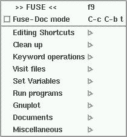

@macro fuse{} {@sf FUSE} @ifnottex FUSE
@macro greek{x,y} @ifnottex \x\(\y\)
@macro greekletter{x} @ifnottex \x\
@macro greeknot {x,y} @ifnottex \x\_0(\y\)
@macro ezero{} @ifnottex E_0
@macro thetad{} @ifnottex theta_D
@macro sigsqr{} @ifnottex sigma^2
@macro amp{} @ifnottex s0^2
@direntry * FUSE Tutorial: (fuse-tutorial). Tutorial for FUSE
The author of {@sf FUSE}, Bruce Ravel, can be reached at:
Ceramics Division, Room 329
National Institute of Standards and Technology
Gaithersburg, MD 20899
<ravel@phys.washington.edu>
The latest version of {@sf FUSE} can always be found at
@url{http://feff.phys.washington.edu/~ravel/fuse/}
Permission is granted to make and distribute verbatim copies of this manual provided the copyright notice and this permission notice are preserved on all copies.
Permission is granted to copy and distribute modified versions of this manual under the conditions for verbatim copying, provided that the entire resulting derived work is distributed under the terms of a permission notice identical to this one.
Permission is granted to copy and distribute translations of this manual into another language, under the above conditions for modified versions, except that this permission notice must be stated in a translation approved by the author.
Copyright (C) 1998 Bruce Ravel <ravel@phys.washington.edu>
Updated 27 July, 1998
In this tutorial, I will lead you step by step through the analysis of some copper data. Along the way, we will explore many of the features of @fuse{}. In this tutorial I assume that you, the reader, are familiar with the physics of EXAFS and the principles of EXAFS analysis. I also assume that you are familiar with FEFF and the UWXAFS programs, although you certainly do not have to be an expert in their use. In fact, working through this tutorial is a good way to explore some of the features of those programs. I make some effort in this tutorial to accomodate the Emacs novice. It is possible that a reader may have been drawn to @fuse{} despite not being a convert to the religion of Emacs.(1) For that reader, I try to offer enough guidance that she can get through the entire tutorial without having to know too many magic Emacs key sequences.
As an aid to the Emacs-non-expert, I will explain some of the notation
that I will use in the pages to come. Many tasks in Emacs (using
@fuse{} or performing any other editing chore) involce the use of
modifier keys. When you read something like C-c, that means to
hold down the ctrl key while hitting the c character.
C-c C-r r then means to hit ctrl and c followed by
ctrl and r followed by r. In Emacs jargon M- is
read as Meta and, on most keyboards, refers either to the
alt or esc key. These two can be used interchangably,
however these two keys typically behave somewhat differently. When you
read M-n that means either to hit the alt and n
keys at the same time or to hit the esc key followed by the
n key. S- is interpretted the same as C- except that
it means to hold the shift while hitting the following character.
In a few cases, a key sequence may involve more than one modifier.
M-C-` means to hit ` (that is the backtick or open quote
character) while holding down both alt and ctrl.
I will assume that you are using a three-button mouse or a mouse capable
of three-button emulation. Throughout this document I will refer to the
mouse buttons as mouse-1, mouse-2, and mouse-3.
typically mouse-1 is the left button, mouse-2 is the
middle, and mouse-3 is the right. Sometimes this arrangement is
altered to suit the preferences of the user.
Most of the interactivity of Emacs occurs either via pop-up windows or through the minibuffer. Pop-up windows usually have text, buttons, and menus which are fairly self-explanatory. The minibuffer is that strip at the bottom of the Emacs frame below the mode line. That space is reserved for displaying messages and for interaction with the user. Many of the functions in @fuse{} use this space for one of those purposes. The phrase minibuffer is used to refer to that space when Emacs is interacting with the user and the phrase echo area is used to describe it when it is displaying a message non-interactively. I will use both terms in this document.
There are four ways of making Emacs execute a command or function.
mouse-1 on the menu
label and a menu will open. Click on an item in the menu and that
function will execute or click on a submenu, usually denoted by a
right-pointing triangle, and that submenu will open. Sometimes a menu
item will be displayed in grey stipple. This means that option is not
currently selectable. In Emacs, the key sequence bound to same function
as a menu item is usually written in the right column of the pull down
menu. The menus are great for searching for a certain function and also
serve to teach you the key sequences for the functions you use often.
mouse-1 on a toolbar icon to execute the function bound to it. A
short description of the function appears in the echo area whenever the
mouse is over the toolbar icon.
@ifnotinfo
If you have a Emacs open in front of you, click mouse-1 on
the Input menu. The contents of this menu are shown in Figure 1.
This menu and its submenus will be referred to throughout this tutorial.
If you click any mouse button anywhere else on your screen, the menu
will disappear without anything selected.
In the example subdirectory of the @fuse{} distribution are two
files related to this tutorial. (1) `cu10k.dat' contains copper
K edge transmission data on a pure copper foil. (2) `copper'
contains crystallographic data for metallic copper.
Both analysis of data and the use of @fuse{} are facilitated by practical and consistent use of th directory structure and disk space where you do you work. Throughout this example I will refer to files foudn in certain locations. These examples reflect my own preference for how to organize the many files generated by the various programs used to analyze the data. Although I encourage you to come up with practices for managing files with which you are comfortable, I suggest that you follow my lead during this example and experiment once you are more familiar with @fuse{}.
Remember that the the Buffers menu or the key sequences C-x
b or C-x C-b can be used to switch between different buffers. A
file is saved by hitting C-x C-s or selecting the save function
from the Files menu. A new file is opened by hitting C-x f
or selecting Open... from the Files menu. Finally, you
can quit Emacs by hitting C-x C-c or Exit Emacs from the
Files menu.
@ifnotinfo
Figure 1: INPUT mode pull-down menu

Before launching into using @fuse{}, let's set up some workspace. I am
writing this assuming you are parked at a command line in a terminal
emulator, but these disk management chores could just as easily be done
with a file manager such as The Midnight Commander or tkDesk or with the
dired package in Emacs. On my computer, I have a directory where
I do all of my analysis which is called, appropriately enough,
`analysis/'. Find a place where you want to do the analysis chore
in this tutorial and cd to that directory. Now make a directory
to hold your analysis of the copper data by issuing the command
> mkdir Cu
Now cd to the `Cu/' directory. This will be our base of operations for the remainder of this tutorial.
I like to be tidy and place common kinds of files in their own subdirectories. in the `Cu/' directory, issue this command
> mkdir data feff fits
This will make three subdirectories for holding the differnt kinds of files that will be generated throughout this tutorial.
Now, using the cp command, copy the file `cu10k.dat' from the @fuse{} distribution into the `data/' subdirectory and copy the `copper' file into the `feff/' subdirectory.
Ready for some analysis?
This document was prepared using the GNU Texinfo system. This allows me to generate documentation in info, printed, or html format from a single source. The info, postscript, and html versions of this document can be found in the `docs/' subdirectory of the @fuse{} distribution.
The images in this document are screen shots of an XEmacs session on my computer. I use Linux 2.0.32, XEmacs 20.4, and the FVWM2 window manager. Some of the text in shots of actual input files is a bit hard to read in the printed manual. This is because of the greyscale representation of the syntax colorization of the text. It may be fuzzy in the printed manual, but it looks great on the screen!
Although all of my screen shots are of an XEmacs session, @fuse{} works just as well with FSF Emacs as with XEmacs. The only difference significant to this tutorial is the presence of the toolbar in the XEmacs frame. Since all functionality bound to the XEmacs toolbar is also bound to pull-down menus, this tutorial proceeds identically for both flavors of Emacs.
Go to the first, previous, next, last section, table of contents.